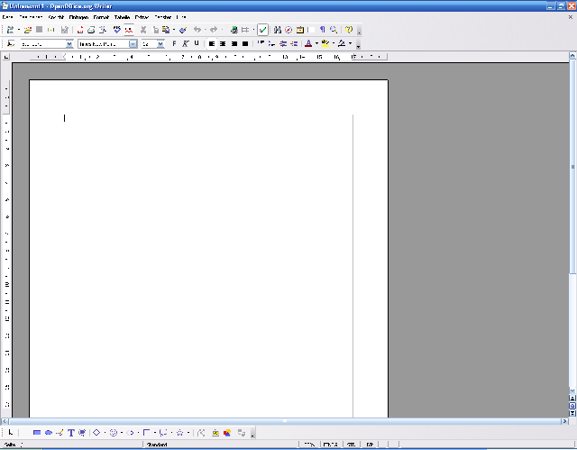
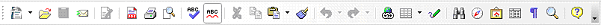
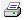
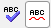
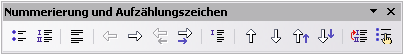
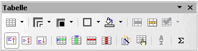
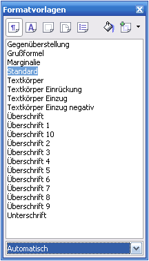
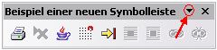
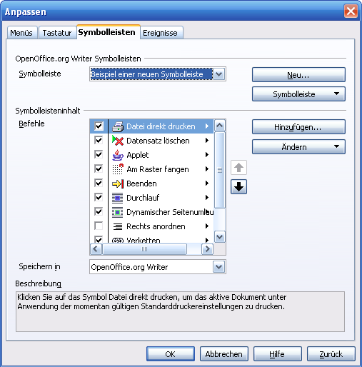

| [zurück] | [Hauptmenü] |
[weiter] |
OpenOffice.org Textdokument
-
Grundlegende Bedienelemente
Die nachfolgenden Absätze stellen die grundlegenden
Bedienelemente des OpenOffice.org Textverarbeitungsprogrammes
vor.
Hauptfenster
|  |
| Abb. 1: OpenOffice.org Writer nach dem Start |
In Abb.1 sehen Sie das
Hauptfenster des Textverarbeitungsprogrammes von
OpenOffice.org. Es finden sich hier nützliche und auch
für OpenOffice.org charakteristische Bedienelemente
wieder. Zuerst richten wir unsere Augen auf die
Menüleiste:
Menü
|
|
| Abb. 2: Menüleiste von OpenOffice.org |
Hier in der Menüleiste lassen sich alle Befehle finden. Sie wird aber wegen der effizienten Symbolleisten eher selten
gebraucht. Die Menüleiste passt sich an die momentane Arbeitsumgebung
an; d.h. dass sie z.B. im Tabellenkalkulationsprogramm
andere Einträge hat als hier, da dort andere Funktionen verwendet werden.
Wichtige Einträge sind:
- Datei: hier finden sich Unterpunkte für das Öffnen und Schließen, sowie Speichern und Drucken von Dokumenten sowie andere grundlegende Funktionen
- Bearbeiten: Einträge für das Editieren (Ausschneiden, Kopieren, Einfügen) von Text, Suchen, ...
- Ansicht: Ansichtsoptionen, Symbolleisten ein- und ausblenden, ...
- Einfügen: für das Einfügen von Objekten, Sonderzeichen, erzwungenen Seitenumbrüchen, ...
- Format: Formatierungsoptionen für Schrift, Absatz, ...
- Tabelle: Tabelle einfügen, bearbeiten, löschen ...
- Extras: Rechtschreibung, Optionen, ...
- Fenster: Steuerung der Fenster
- Hilfe: Hilfe über OpenOffice.org Writer, Registrierung und Support
Funktionsleiste
|
 |
| Abb. 3: Funktionsleiste von
OpenOffice.org Writer |
Das ist die Funktionsleiste. Sie ist für die grundlegendsten Funktionen zuständig.
- Das Symbol für das Erstellen eines neuen Dokumentes.
- Das Symbol
 rechts davon für
das Öffnen eines gespeicherten Dokumentes.
rechts davon für
das Öffnen eines gespeicherten Dokumentes. - Das Diskettensymbol zum Speichern (ist dann aktiv, wenn es eine zu speichernde Veränderung gibt).
- Das Symbol zum Versenden des Dokumentes per E-Mail.
- Das Symbol zum Exportieren des Dokumentes als PDF-Datei.
- Das Drucksymbol  zum Drucken (hier direkt, im Menü gibt es einen Dialog für das Auswählen des Druckers - diese Einstellung wird dann für jedes Dokument getrennt gespeichert).
- Das Symbol für die Seitenansicht.
- Die Symbole  für die Rechtschreibkorrektur.
- Textbearbeitung: Ausschneiden, Kopieren, Einfügen (beim Einfügen mehrere Optionen, je nach dem ob man die Formatierungen mit übernehmen will oder nur den reinen Text einfügen möchte).
- Die nächsten Symbole machen ungewollte Schritte rückgängig (oder stellen sie dann doch wieder her).
- Die Symbole werden für weitere Funktionen wie etwa Hyperlink, Tabelle erstellen, Zeichenfunktionen, Suchen, Navigator, Gallery und Datenquellen verwendet.
- Das Symbol blendet Absatzmarken, Zeilenumbrüche, Tabulatoren und jedes Leerzeichen ein, um genau kontrollieren zu können ob diese unsichtbaren Formatierungszeichen passen oder nicht irrtümlicherweise zwei Leerzeichen vorhanden sind.
Objektleiste
|
|
| Abb. 4: Objektleiste |
Die Objektleiste ist für spezielle Formatierungsoptionen zuständig. Links
beginnend mit Absatzvorlagen (dazu bei den
Formatvorlagen mehr)
über Schriftart, Größe, Schnitt, Ausrichtung
und Einfügen von Listenelementen
(nummeriert oder mit Punkten) und Einzüge.
Weiters ist es wichtig zu wissen, dass sich diese Zeile der jeweiligen Umgebung anpasst. Das soll heißen, dass, wenn man z.B. innerhalb einer Tabelle oder einer Aufzählung ist, sich zusätzlich zu dieser Leiste eine andere gesellt. Es kann über das blaue Dreieck (ganz rechts) zwischen den jeweiligen Objektleisten gewechselt werden.
Weiters ist es wichtig zu wissen, dass sich diese Zeile der jeweiligen Umgebung anpasst. Das soll heißen, dass, wenn man z.B. innerhalb einer Tabelle oder einer Aufzählung ist, sich zusätzlich zu dieser Leiste eine andere gesellt. Es kann über das blaue Dreieck (ganz rechts) zwischen den jeweiligen Objektleisten gewechselt werden.

 |
| Abb. 5: alternative
Objektleisten |
Diese alternativen Objektleisten Abb. 5 beinhalten teilweise
ähnliche oder gänzlich andere Funktionen. Die
Gliederungssymbolleiste hilft beim Erstellen und Ordnen von
Gliederungen ,
deren Formatierung und fügt Absätze ohne
Gliederungsnummer ein  . Die Tabellensymbolleiste hilft beim Erstellen von
Tabellen ,
löscht Spalten oder Zeilen, ändert Ränder
uvm.
. Die Tabellensymbolleiste hilft beim Erstellen von
Tabellen ,
löscht Spalten oder Zeilen, ändert Ränder
uvm.
Lineal
| Abb. 6: Lineal |
Das Lineal Abb. 6 erfüllt den
Zweck, die linken und rechten Seitenränder festlegen zu
können und die Einzüge des momentan unter dem
Cursor befindlichen Absatzes einzustellen. Außerdem ist
das Zeichen im linken Quadrat für die Tabulatoren
zuständig, dazu aber später mehr. Damit lässt
sich unter anderem ein optisch ansprechendes Design des
Dokumentes erzielen, was die Strukturierung und Lesbarkeit
verbessert!
Formatvorlagen
|  |
| Abb. 7: Formatvorlagen |
Die Formatvorlagen sind das zentrale Werkzeug, um ein Dokument
ansprechend zu formatieren. Sie werden über die Funktionsleiste (Button rechts), die
F11 Taste auf der Tastatur oder über das Menü (Format>Formatvorlagen) aufgerufen.
Genauso wie bei der Objektleiste
hat auch er je nach benötigter Funktion verschiedene
Gesichter. Besonders wichtig ist die
Absatzformatierung, aber auch die Zeichen-
und Seitenformatierung - weiteres stehen
Listenformatierung und Rahmenvorlagen zur
Verfügung. Die anderen Symbole dienen dem Erstellen und
Zuweisen von Vorlagen. Weiters lässt sich unten
über das Auswahlmenü die Liste aller vorhandenen
Vorlagen sinnvoll filtern.
Benutzerdefinierte Symbolleisten

Es ist so, dass die Symbolleisten nicht starr vorgegeben sind, sondern
individuell angepasst oder neu erstellt werden können.
Zum ändern einer vorhandenen, bzw. erstellen einer neuen Symbolleiste,
rufen Sie in der Menüleiste - Extras > Anpassen auf
und klicken Sie im Register auf Symbolleisten.
Bei einer frei schwebenden Symbolleiste (siehe
Abbildung) können Sie dazu auch den schwarzen Pfeil > Symbolleiste
anpassen verwenden...

Um eine neue Symbolleiste zu erstellen:
- Auf "Neu" klicken
- Namen für die Symbolleiste eingeben
- Auf "Hinzufügen" klicken, um der neuen Symbolleiste Befehle hinzuzufügen.
Um eine vorhandene Symbolleiste zu bearbeiten:
- Den Haken vor unerwünschten Befehlen deaktivieren.
- Auf "Hinzufügen" klicken, um neue Befehle hinzuzufügen.
| [zurück] | [Hauptmenü] |
[weiter] |
© Copyright 2003, Harald Schilly
This documentation is part of "Erste Schritte: OpenOffice.org Textdokument", which is released
under the terms of the PDL.
For full copyright and license info read the index page.
Contributors are: Wieland Peter